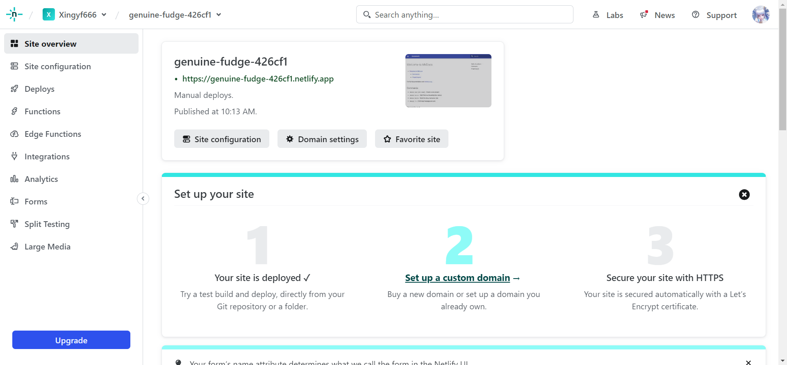

MkDocs
基本知识
安装配置
首先需要安装 mkdocs 库
然后安装一些主题，例如
然后依次执行
将会得到如下输出
INFO - Building documentation...
INFO - Cleaning site directory
INFO - Documentation built in 0.28 seconds
INFO - [22:11:31] Watching paths for changes: 'docs', 'mkdocs.yml'
INFO - [22:11:31] Serving on http://127.0.0.1:8000/
INFO - [22:11:51] Browser connected: http://127.0.0.1:8000/
命令行此时不会退出，而是开启了网页服务。在浏览器打开 http://127.0.0.1:8000/ 网页就得到
# Welcome to MkDocs
For full documentation visit [mkdocs.org](https://www.mkdocs.org).
## Commands
* `mkdocs new [dir-name]` - Create a new project.
* `mkdocs serve` - Start the live-reloading docs server.
* `mkdocs build` - Build the documentation site.
* `mkdocs -h` - Print help message and exit.
## Project layout
mkdocs.yml # The configuration file.
docs/
index.md # The documentation homepage.
... # Other markdown pages, images and other files.
书写文档
在 doc 文件夹下创建和通过文件夹嵌套的任何 mk 文件都会被渲染，而以 . 开头的文件夹和文件即使是 mk 文件也会被忽略。
Index
通常网站服务都会以 index.html 文件包含所有目录。这里我们需要 index.md 文件，MkDocs 会将它渲染为 index.html 来搭建网站。也可以用 README.md 文件替代 index.md，但是如果两个文件都存在，则前者会被忽略。
所有本地引用（图片、超链接）都应该使用相对路径。
Nav
在 mkdocs.yml 中配置 nav 来定义导航菜单。如果不配置，就会自动将所有 mk 文件列入菜单，根据字母表排序。简单的配置如下
所有文件路径相对于 docs_dir，默认取 doc 文件夹。此时菜单名就是对应的文件名。也可以定义菜单名
可以进行嵌套定义
nav:
- Home: 'index.md'
- Test:
- test1: 'test1.md'
- test2: 'pack/test2.md'
- test3: 'pack/test3.md'
值得一提的是，菜单的嵌套关系不需要反映文件的存放路径。
选择主题
MkDocs 包含两种主题 mkdocs 和 readthedocs，设置主题名
不同的主题可能支持不同设置。例如 mkdocs 主题支持设置菜单深度（默认为 2）以及菜单风格（light 或 dark）等
自定义主题
小调整
我们可以对 MkDocs 的主题进行自定义修改，通过在 docs_dir 变量（默认为 doc）指定的目录下添加 css, js 文件覆盖主题的效果。通过指定 extra_css 和 extra_javascript 参数，说明配置文件的位置。例如在 doc/css 下创建 extra.css 文件
然后在 mkdocs.yml 中配置
就可以修改 h1 标题的颜色。
复杂配置
使用 custom_dir 参数，指定自定义主题的目录。
此目录的结构必须与该主题定义的结构相同。例如 material 主题目录结构为
.
├─ .icons/ # Bundled icon sets
├─ assets/
│ ├─ images/ # Images and icons
│ ├─ javascripts/ # JavaScript files
│ └─ stylesheets/ # Style sheets
├─ partials/
│ ├─ integrations/ # Third-party integrations
│ │ ├─ analytics/ # Analytics integrations
│ │ └─ analytics.html # Analytics setup
│ ├─ languages/ # Translation languages
│ ├─ actions.html # Actions
│ ├─ comments.html # Comment system (empty by default)
│ ├─ consent.html # Consent
│ ├─ content.html # Page content
│ ├─ copyright.html # Copyright and theme information
│ ├─ feedback.html # Was this page helpful?
│ ├─ footer.html # Footer bar
│ ├─ header.html # Header bar
│ ├─ icons.html # Custom icons
│ ├─ language.html # Translation setup
│ ├─ logo.html # Logo in header and sidebar
│ ├─ nav.html # Main navigation
│ ├─ nav-item.html # Main navigation item
│ ├─ pagination.html # Pagination (used for blog)
│ ├─ post.html # Blog post excerpt
│ ├─ search.html # Search interface
│ ├─ social.html # Social links
│ ├─ source.html # Repository information
│ ├─ source-file.html # Source file information
│ ├─ tabs.html # Tabs navigation
│ ├─ tabs-item.html # Tabs navigation item
│ ├─ tags.html # Tags
│ ├─ toc.html # Table of contents
│ └─ toc-item.html # Table of contents item
├─ 404.html # 404 error page
├─ base.html # Base template
├─ blog.html # Blog index page
├─ blog-archive.html # Blog archive index page
├─ blog-category.html # Blog category index page
├─ blog-post.html # Blog post page
└─ main.html # Default page
要对其中的某些设置进行覆盖，就需要按照该结构，定义相同名称的文件。在 custom_theme 目录下创建 main.html 文件
其中第一行确保此文件是对基本配置的扩展，之后设置模板块。这里修改了 htmltitle 模板，它包含网页的标题内容。
如果不是要覆盖，而是要增加新的设置，使用模板变量 {{ super() }} 表示原本的内容，然后可以在它前后添加描述
{% extends "base.html" %}
{% block scripts %}
{{ super() }}
<script src="{{ base_url }}/js/test.js"></script>
{% endblock %}
例如这里在后面添加了 js 脚本，其中模板变量 {{ base_url }} 表示基本路径，确保是相对于 docs_dir 的路径。
material 主题提供的模板包括
| Block name | Purpose |
|---|---|
analytics |
Wraps the Google Analytics integration |
announce |
Wraps the announcement bar |
config |
Wraps the JavaScript application config |
container |
Wraps the main content container |
content |
Wraps the main content |
extrahead |
Empty block to add custom meta tags |
fonts |
Wraps the font definitions |
footer |
Wraps the footer with navigation and copyright |
header |
Wraps the fixed header bar |
hero |
Wraps the hero teaser (if available) |
htmltitle |
Wraps the <title> tag |
libs |
Wraps the JavaScript libraries (header) |
outdated |
Wraps the version warning |
scripts |
Wraps the JavaScript application (footer) |
site_meta |
Wraps the meta tags in the document head |
site_nav |
Wraps the site navigation and table of contents |
styles |
Wraps the style sheets (also extra sources) |
tabs |
Wraps the tabs navigation (if available) |
零宽空格
在 MkDocs 渲染的过程中，可能会出现汉字的加粗失效的问题。这是因为定界符规范根据空格来判断加粗符号的嵌套关系，但是这样就会导致字之间没有空格的汉字加粗失效。解决方案就是使用 Unicode 中的零宽空格 U+200B，它通常用于指定长文本换行的位置。只有当文本内容超出一行时，它才会进行换行。
搭建网站
使用 BitBalloon 搭建网站，先通过
构建 site 文件夹，然后上传到网站上即可。
